Zig pattern enhancements
What is it?
The Zig and Zig Zag patterns in a Floor Wall milling operation are enhanced to give you improved cutting efficiency and greater control over the tool path.
Automatic cut angle option
The Automatic cut angle option is enhanced in the following ways:
-
If the milled faces are bound by one or more walls, NX orients the milling direction to follow the direction of the wall.
|
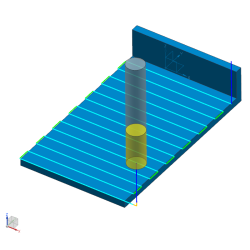 |
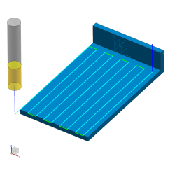 |
|
NX 8.5 |
Previous releases |
-
If the faces are not bound by walls, NX minimizes the number of passes and makes each pass as long as possible.
|
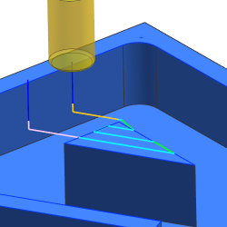 |
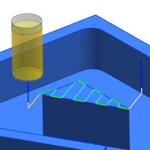 |
|
NX 8.5 |
Previous releases |
Stepover distance and pass control
You can control:
-
The stepover distance precisely, by using the Exact option.
-
The number of passes precisely, by using the Passes option.
-
The maximum spacing, but allow an equal stepover distance to be calculated based on the cut area size.
Use the Variable Average option to specify the minimum and maximum distance values. NX analyzes the first pass and the next wall, and then creates equal spaces in between them.
Cut Regions
The former Blank Overhang is replaced by the following new input values in the Cutting Parameters dialog box.
-
First Pass Overhang specifies the percentage of the cutter diameter or the distance by which the tool hangs over geometry on the first pass of your cutter path.
-
Tool Run On specifies the percentage of the tool diameter or the distance by which to extend the cutting motion before the tool reaches the cut region.
-
Tool Run Off specifies the end of the cut region. You have the following options:
Extend to Region
Automatically extends the Tool Run Off beyond the cut region.
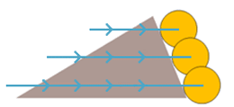
Specify
Lets you select the tool diameter or distance by which to extend or trim the cutting motion relative to the optimized end of cut point. This point is determined by NX as the last point where material is removed.
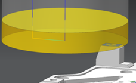
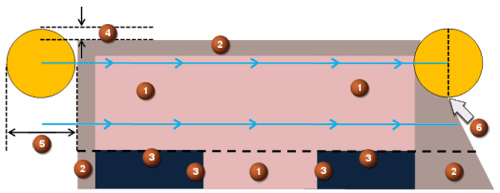
|
(1) |
Part (Floor) |
|
(2) |
Blank/IPW |
|
(3) |
Wall |
|
(4) |
First Pass Overhang |
|
(5) |
Tool Run On (100% shown) |
|
(6) |
Tool Run Off (0% shown) |
-
Single Pass Offset lets you select an offset distance for the path when only a single path is selected.
|
Note |
The last pass overhang is controlled exclusively by the path processor. NX calculates 10% of the tool flat to determine where the last pass will travel. |
|
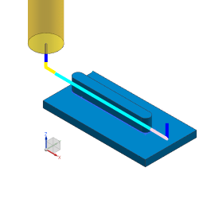 Single Pass Offset > 0. The cutting pass moves to the right if you look along the cut direction. |
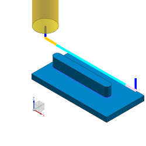 Single Pass Offset < 0. The cutting pass moves to the left if you look along the cut direction.. |
Across voids enhancement
The Across Voids cutting parameters options let you handle open voids much like closed voids in previous versions.
|
Note |
NX moves the tool across voids without lifting the tool only if both sides of the gap belong to the same cut region. |
|
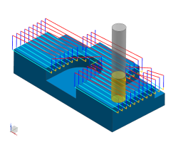 Follow allows the cutter to follow the exact geometry with lifts. |
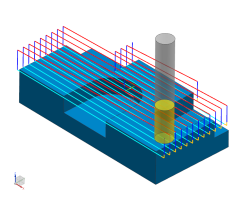 Cut follows the geometry but creates a continuous path over the void. |
|
Traverse follows the geometry but traverses between engagements of the part geometry that is to be machined. |
|
Where do I find it?
|
Application |
Manufacturing |
|
Prerequisite |
Floor Wall operation |
|
Location in dialog box |
Floor Wall dialog box or Floor Wall with IPW dialog box→Path Settings group→(Pass Control) Stepover list (Automatic cut angle) Cutting Parameters (First Pass Overhang and Tool Run Off) Cutting Parameters (Across Voids) Cutting Parameters |